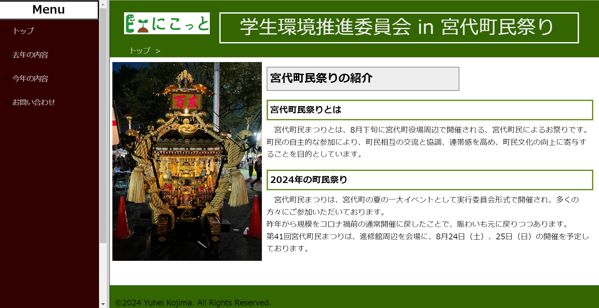

WEサイト

WEBサイト作成
- 期間 ：1ヶ月
- 使用言語 ：HTML CSS
- 制作理由 ：委員会活動の広報を行うことで個人ブースでの集客を狙い、初めてのWebサイト作成の機会とした
- 特徴 ：視認性・シンプルなデザインを意識し、ページを2分割している
【概要】 WEBサイト作成では、阿部寛さんのWEBサイトを参考に所属している委員会の活動を紹介し、講義受講者250人の中から優秀者として選出されました。 WEBサイト作成時には閲覧者にとっての見やすさを意識し、ページの移動が左メニューで簡潔に出来るようにすると共にページにグローバルナビゲーションが被らないようにしました。
委員会活動HP